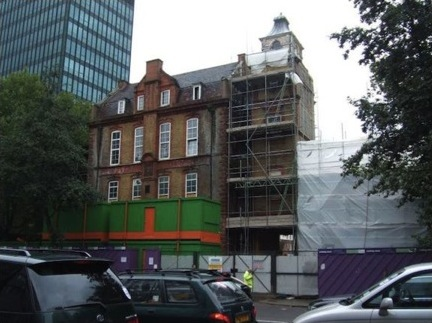

EGA for Women
A lasting memorial in the Elizabeth Garrett Anderson Gallery at the UNISON Centre
News
New audio documentary about Elizabeth Garrett Anderson
Boni Sones has produced an audio documentary about Elizabeth Garrett Anderson and Millicent Fawcett. These two sisters have an inspiring story to tell, and their influence on women's rights in all areas of our lives including education and health care still resonate today.
Listen to the documentary here: https://www.bonisonesproductions.com/gallery.html
Sold by UCH to UNISON in 2005
Jane Leighton - who started as curator and as Editorial Director - substantially developed the initial concept provided by EGA for Women.
EGAW are extremely grateful for her imaginative contribution to exhibition planning which created a sustainable structure for the gallery (and particularly for her ability to engage all participants fully in the project). John Cole of UNISON is Project Director, and chairs the operational board, which oversees the project and includes the consultant curator, Lynne Walker, as a representative from EGAW. Emeline Winston is exhibition organizer.
The curatorial team, designers and creative production (2011):
- Elizabeth Crawford (author of Enterprising Women: The Garretts and their Circle 2nd edition 2010).
- Jennian Geddes (published widely on early women doctors e.g see www.ncbi.nlm.nih.gov/pmc/articles/PMC1712367/)
- Lesley Hall (archivist at the Wellcome Library. Her interests include the history of gender and sexuality in the interwar years; see www.lesleyahall.net)
- Narmaada Thiranagama, Policy Officer (Women's Equality) at the TUC.
- Clare Bayley, Editorial Consultant 20th century.
Exhibition Designers
- Ivor Heal Design.
- New Angle: software and editorial content.
- Graham Wickham: hardware specialist.

The EGAH during restoration (2010)
Our Plans
Since 2005 EGAW has been working with UNISON to achieve a fitting memorial to Elizabeth Garrett Anderson in the original EGAH building. This has been formalized by a section 106 agreement between UNISON and Camden Council for:
"...securing the creation and retention in perpetuity within the Community Space...[opening times]...of a publicly accessible museum/exhibition space focusing on the life and achievements of Elizabeth Garrett Anderson and other women pioneers of the medical profession and the development of hospitals and medical facilities on the site of the Property and in London".
(The Community Space Plan, 2.18 (iv))
Elizabeth Garrett Anderson died in 1917. The exhibition will tell the story of her life's work and explore its impact on later struggles for equality including those undertaken by UNISON.